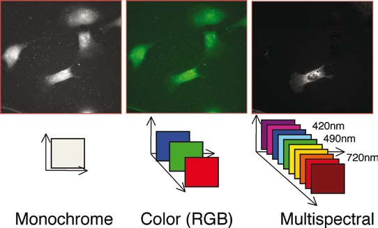
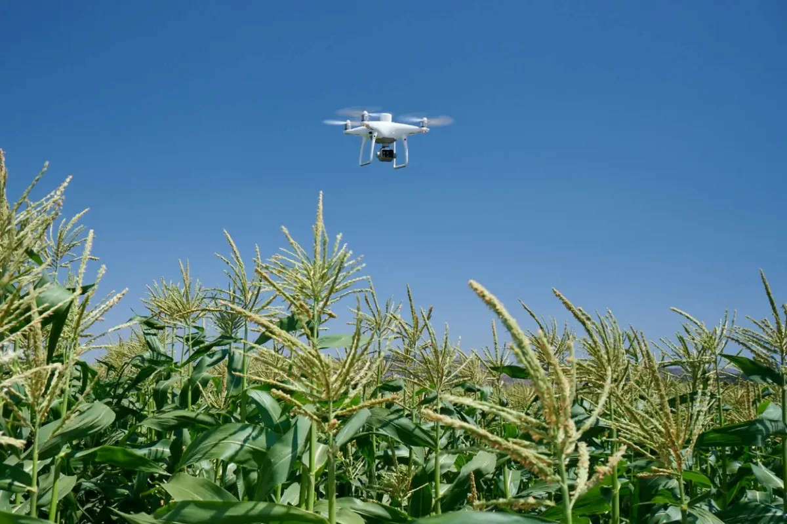
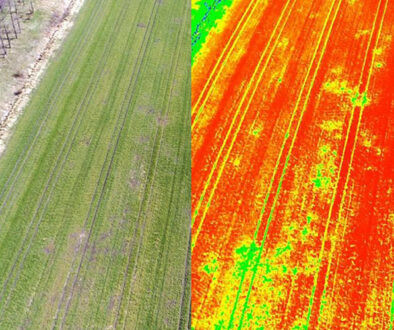
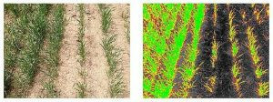
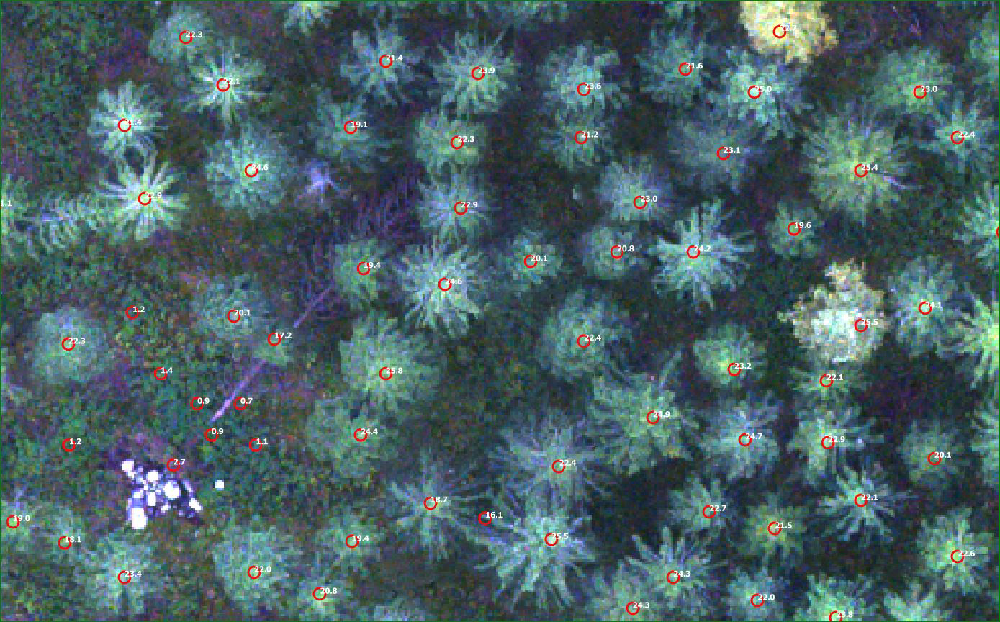

Trong bối cảnh các sản phẩm nông nghiệp hữu cơ ngày càng phát triển rộng về năng suất và diện tích, việc giám sát chất lượng sản phẩm cùng với các chỉ dẫn địa lý là hết sức quan trọng. Máy bay không người lái (UAV) thực hiện việc giám sát, đánh giá, phân tích và quản lý nông nghiệp bằng việc trang bị máy ảnh đa quang phổ (Multispectral) trên UAV giúp nông dân và kỹ sư hiểu rõ hơn về tình trạng của thực vật.
Máy ảnh đa quang phổ có hệ thống ghi nhận hình ảnh gồm một camera bình thường và năm cảm biến ở các bước sóng khác nhau– bao gồm đỏ, xanh dương, xanh lá, cận đỏ và cận hồng ngoại – có khả năng thu được cả bước sóng ánh sáng nhìn thấy và ánh sáng hồng ngoại.
Dữ liệu hình ảnh sau khi chụp sẽ được các chuyên gia phân tích về sức khỏe thực vật, thành phần đất cũng như độ mặn và ô nhiễm nước. Ngoài ra, còn có một số loại cảm biến quang phổ có khả năng tối đa hóa độ chính xác và tính nhất quán của việc thu thập dữ liệu trong các yêu cầu bay vào những thời điểm khác nhau trong ngày.
Mặc dù, việc ứng dụng Multispectral vào các lĩnh vực sản xuất, đời sống đem lại nhiều hiệu quả, giúp giảm sức lao động một cách đáng kể với độ chính xác cao, nhưng hiện nay tại Việt Nam công nghệ này vẫn còn khá mới mẻ dẫn đến việc ứng dụng Multispectral chưa được phổ biến và ít được mọi người biết đến. GDTS chúng tôi tự hào cung cấp các dịch vụ liên quan đến ứng dụng Multispectral đến quý khách hàng. Một số ứng dụng nổi bật của Multispectral đã và đang được áp dụng vào thực tiễn nông nghiệp ở các nước tiến tiến có thể kể đến như:
Về nông nghiệp, dùng Multispectral để khảo sát, theo dõi và lập bản đồ sức khoẻ cây trồng, xác định dịch bệnh, cỏ dại, lập bản đồ cây xanh đô thị, thảm thực vật dựa trên chỉ số RGB, xác định số lượng và phân loại thực vật, ... Hình ảnh đa phổ có thể hữu ích cho các chuyên gia nông nghiệp bằng cách cung cấp thông tin mà mắt người không nhìn thấy, qua các chỉ số thứ cấp như NDRE và NDVI từ đó họ có thể đưa ra các quyết định kịp thời, sáng suốt về xử lý cây trồng, giảm chi phí, tiết kiệm tài nguyên và tối đa hóa sản lượng.
Chỉ có hình ảnh từ trên không là chưa đủ đối với yêu cầu của các chuyên gia nông nghiệp. Chuyển đổi giữa phân tích chỉ số NDVI và nguồn cấp dữ liệu RGB trực tiếp để có được ngay vị trí cần chú ý, nhờ đó, các chuyên gia có thể nhanh chóng đưa ra các quyết định để xử lý.
 Về giám sát và kiểm tra môi trường, ngoài ra Multispectral còn ứng dụng đáng kể trong việc quản lý, đánh giá mức độ ô nhiễm của môi trường dựa vào màu của nước, kiểm tra rò rỉ và quản lý nước phù hợp với loại cây trồng giúp tiết kiệm tránh lãng phí. Hoặc quản lý thảm thực vật ven sông trong khi bảo vệ môi trường sống hoặc hệ sinh thái.
Về lâm nghiệp, việc kiểm tra chăm sóc định kỳ liên quan đến thực vật có thể được thực hiện thông minh hơn và hiệu quả hơn khi sử dụng Multispectral – tận dụng những hiểu biết đa khía cạnh có thể dùng nó để theo dõi sức khỏe rừng, đo sinh khối, lập bản đồ đường bờ.
Máy bay không người lái nói chung và Multispectral nói riêng đang dần trở thành cuộc cách mạng hóa cách thức canh tác hàng ngày của nhà nông. Một xu hướng nông nghiệp hóa dựa trên sự hỗ trợ tối ưu của công nghệ đang dần mở ra tại Việt Nam. Hứa hẹn sẽ mang lại lợi ích về nhiều mặt với chi phí thấp nhất mà hiệu quả cao nhất, tạo ra năng suất cao hơn với ít nguyên liệu hơn.
Để được cung cấp thêm thông tin về dịch vụ Thu thập Dữ liệu Nông nghiệp, xin vui lòng liên hệ.